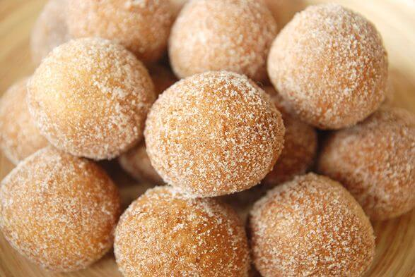

"This is the cinnamon ball html page"

Cinnamon Balls
Cinnamon balls are delicious , healthy snacks with digestive properties. Kids love them
and your stomach will too!
A further list of ingredients and Debbie's other recipes can be found at her site.
- Cinnamon
- Butter
- vanilla
- Dough Mixture
- flour
- baking soda
- salt
- cinnamon powder
- water
Steps to make Cinnamon Balls!
- Mix dough, knead 5 times and cover to rest
- roll dough flat and layer with butter and cinnamon
- Broll dough into cylinder, chop slices and roll into balls
- Bake at 325 for 15 minutes